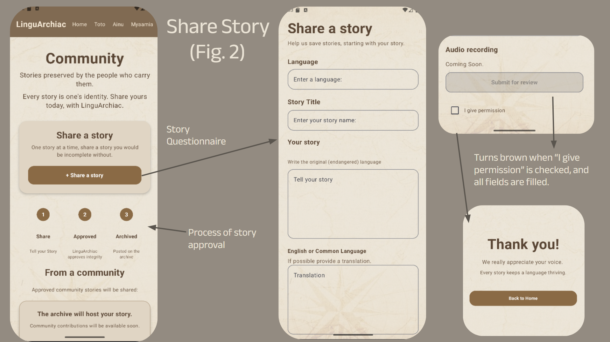

COMMUNITY SUBMISSIONS
Share YOUR Story

WE are the next generation. WE are in charge of ensuring all voices are being heard. Thus, WE must contribute. The "Share Story" feature allows for a person to add to the archive. First, they will fill out a short form about the language they are choosing to share the story in, the title, the story in endangered language, and in common language and/or English. When all fields are filled out, it'll be automatically submitted for review. LinguArchiac selects stories that are genuine and preserve integrity. Future: We will be implementing an audio feature, so contributors can narrarate the story.